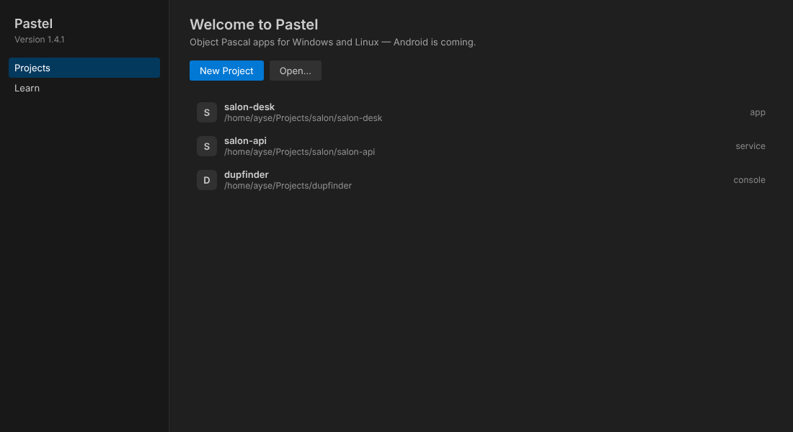
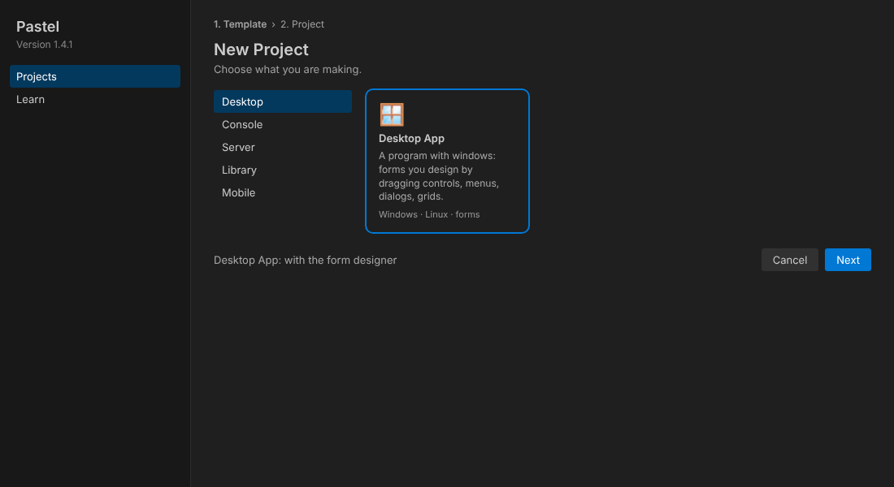
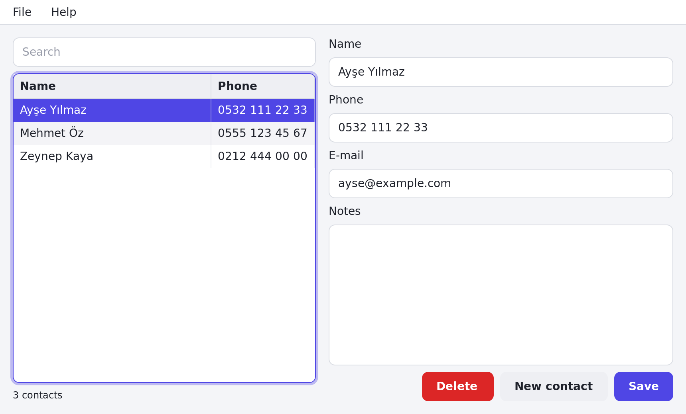

#Pastel
A modern cross-platform app framework and toolchain for Object Pascal.
Write your app once in Object Pascal and run it on the desktop, on servers and on Raspberry Pi — and, next, on Android phones. Pastel is built on top of the Free Pascal compiler and brings a modern developer experience: a simple command-line tool, clear project conventions, forms with hot reload, and a UI drawn by Pastel itself so it looks the same everywhere.
Status: 1.0 release candidate. Working today: the
pastelcommand-line tool and libraries for console programs on Linux, Windows and Raspberry Pi (arguments, files, HTTP, JSON, settings, logging, tests, packaging), Linux services and REST APIs (web server, JWT and API keys, SQLite/PostgreSQL/MySQL with migrations, background workers,.deband Docker packages), and code intelligence in VS Code (completion, hover, parameter hints, references, rename, compiler errors while typing) and desktop apps on Linux and Windows (forms from.pformfiles designed in VS Code, about 30 controls including grids and trees, your own controls in the designer, data binding, menus and shortcuts, dialogs, several windows, translations, themes, high-DPI, hot reload, scripted UI tests; Windows installer, AppImage and.debpackages). Ideas, feedback and contributions are very welcome.
#Why Pastel?
Object Pascal is a fast, readable, compiled language with a loyal community. But today you have two choices:
- Delphi is powerful and modern, but commercial.
- Lazarus is free and open source, but its IDE and workflow feel dated, and mobile support is limited.
Pastel aims to be the missing piece: free, open source, modern, and easy to set up.
#Goals
- One codebase, many platforms: Linux, Windows and Raspberry Pi today; Android as a preview (docs/android.md); macOS and iOS are open for contributions
- Any kind of app: GUI apps, terminal tools, servers and headless device programs
- Easy setup:
pastel doctorfinds and installs missing compilers and SDKs - Modern editor experience: VS Code extension with code completion, live preview and hot reload
- Clear conventions: every Pastel project has the same structure, so you always know where things are
- Familiar for Pascal developers: components, properties and events, the way Delphi developers already think
#Try it today
New here? Start with docs/getting-started.md: from installing to a packaged program in fifteen minutes. All the documentation is ordered by topic, with examples on every page: guides that build a whole program step by step, every control and every command with an example, and examples/ with complete programs.
You need Free Pascal 3.2 or newer (on Linux Mint / Ubuntu: sudo apt install fpc fpc-source). GUI apps also use SDL2 and FreeType, which most Linux desktops already have (sudo apt install libsdl2-2.0-0 libfreetype6); Windows programs get SDL2.dll and freetype.dll next to them automatically.
Install a release (Linux): download it from the Releases page and run its install.sh, or unpack the archive and put its bin/ on your PATH. On Windows, unpack the .zip. In VS Code, install the Pastel extension.
Or build it from the sources:
git clone <this repository> pastel
cd pastel
./build.sh # Windows: build.bat
This creates bin/pastel. Put it on your PATH (for example ln -s "$PWD/bin/pastel" ~/.local/bin/pastel), then create a desktop app:
pastel new app hello
cd hello
pastel run # opens the window; edit src/forms/Home.pform while it runs
Or a console program (arguments, --help, colors, tables and questions are ready to use; see docs/console.md, docs/data.md for JSON, settings and logging, and docs/system.md for files, other programs and HTTP):
pastel new console hello
cd hello
pastel run # build and run on this computer
pastel run -- Ali # pass arguments to your program
pastel build --release # optimized build
pastel build --target windows # a Windows .exe, built on Linux
pastel build --target rpi # a Raspberry Pi program
pastel build --all --release # every platform listed in pastel.toml
pastel run --watch # build and run again on every save
pastel test # run the tests in tests/ (see docs/testing.md)
pastel fmt # format the code
pastel package --target windows # a .zip to hand out
pastel doctor # what can this computer build?
Build output goes to build/<platform>/<debug|release>/. Compiler errors point to the file and line, relative to your project.
Building for another platform needs Free Pascal's units for it. pastel doctor tells you what is missing. For Windows, pastel doctor --install windows sets everything up on a 64-bit Linux PC (with fpc-source installed); for Raspberry Pi and other CPUs a cross-compiler is needed, and fpcupdeluxe is the easiest way to install one.
| Command | What it does |
|---|---|
pastel new app <name> |
Create a desktop app with a form (guide); pastel new form <Name> adds a window |
pastel new console <name> |
Create a console project |
pastel new lib <name> |
Create a library that other projects use (docs/workflow.md) |
pastel new service <name> |
Create a program that keeps running, with jobs and a systemd unit (docs/services.md); web APIs: docs/web.md |
pastel new api <name> |
Create a web API with a database: models, controllers, migrations, tests (guide, docs/web.md, docs/database.md) |
pastel new site <name> |
Create a web site: pages from Blade-like templates, Bootstrap, a contact form (docs/pages.md) |
pastel migrate |
Run the database migrations; status, new <name> |
pastel package deb / docker |
A Debian package (with the systemd unit for services, a menu entry for apps), or a container image (docs/deploy.md) |
pastel package appimage / installer |
A Linux AppImage, or a Windows installer (--target windows) of a desktop app (guide) |
pastel lang [add <code>] |
Collect the texts to translate into assets/lang/*.json |
pastel build |
Compile (-t <platform>, -r release, --all, -v verbose) |
pastel run |
Compile and run on this computer (--watch: again on every save) |
pastel test [filter] |
Run the tests in tests/ (--watch) |
pastel fmt |
Format the code (--check for CI) |
pastel package |
Release build in a .tar.gz/.zip in dist/, with a checksum (docs/project.md) |
pastel clean |
Remove the build/ folder |
pastel targets |
List platforms and short names (rpi, win, ...) |
pastel doctor |
Check the compiler and which platforms are ready; --install windows sets up Windows builds |
#VS Code
The vscode/ folder contains the Pastel extension for Visual Studio Code. Build it with cd vscode && npm install && npm run compile && npm run package, then install the .vsix file with Extensions: Install from VSIX…. It gives you:
- a Pastel Run button and Run / Build / Build for Platform commands, with errors in the Problems panel
- a Welcome page with recent projects and a New Project wizard (Pastel: Welcome, Pastel: New Project…)
- a form designer like Delphi's: Object Inspector, Tool Palette, controls placed and resized freely on a grid; updated as you type
- completion, hover help and checks while typing in
.pformfiles Ctrl+clickfromOnClick = SendClickto the code, and a quick fix that creates missing event handlers- a Pastel panel in the activity bar, Pascal outline and go to definition (into the framework too)
- Delphi keys: F9 run, Ctrl+F9 build, F12 form/code, Ctrl+Shift+Up/Down declaration/body
- Format Document and format on save with
pastel fmt; Run and Watch - F5 builds and debugs without any setup (gdb through the C/C++ extension), with Pascal strings shown as text
- the Testing view: every test in
tests/, run or debugged one by one, failures at the line of the assert - snippets for Pascal:
class,proc,func,tryf,trye,for,case,testsuite, ...
Welcome page and New Project wizard. When VS Code opens without a folder, Pastel shows your recent projects; New Project lets you pick what you are making (desktop app, console program, web API, service, library), a name, a folder and the platforms, and opens the new project with its main form in the designer.


The form designer is laid out like Delphi: Structure and the Object Inspector on the left, the form in the middle, the Tool Palette on the right. Drop a control where it should go, drag it anywhere, pull its grips to resize it; timers and actions sit in the tray under the form. Hovering over a control in the palette shows the platforms it works on.

New projects come with .vscode settings: Ctrl+Shift+B builds, F5 builds and debugs with gdb (through the C/C++ extension; F5 also works without a launch.json).
#How a GUI app looks

pastel new app myapp
cd myapp
pastel run
pastel build android
pastel build rpi
A form is described in a readable .pform file (see docs/forms.md for all controls and properties, and the desktop app guide):
object HomeForm: THomeForm
Title = 'Hello'
object Card: TCard
object NameEdit: TEdit
Placeholder = 'Your name'
end
object SendButton: TButton
Text = 'Send'
OnClick = SendClick
end
end
object Greeting: TLabel
end
end
And the logic stays in plain Object Pascal:
procedure THomeForm.SendClick(Sender: TObject);
begin
Greeting.Text := 'Hello, ' + NameEdit.Text;
end;
Pastel generates a base class with a field for every control in the .pform file, so the code can use NameEdit and Greeting directly. The generated code never mixes with yours.
#Project structure
myapp/
├── pastel.toml the project: name, version, platforms, and each platform's settings
│ ([package.android]: id, permissions, links...; [package.windows]...)
├── src/
│ ├── main.pas entry point
│ └── forms/ screens: Home.pform + Home.pas
├── assets/ put into the app on every platform
│ ├── icon.png the icon everywhere: window, .exe, installers, the phone's home screen
│ ├── theme.toml the look: style ("auto": Fluent, Material...) and colors
│ ├── styles/ style files of your own (.pstyle)
│ └── lang/ translations (pastel lang add tr)
├── tests/ pastel test
├── dist/ packages: .deb, setup.exe, .apk (not committed)
└── build/ build output, per platform (not committed)
There is no folder per platform: what differs between platforms is a few lines of pastel.toml, and the
icon is made in every size each platform needs from assets/icon.png. Folders like src/models/ and
src/services/ are yours to add (pastel new model makes src/models/); every folder under src/ is found.
#Architecture
| Layer | Written in |
|---|---|
Your app (.pas + .pform) |
Object Pascal |
Controls, layout, .pform loading, hot reload (framework/) |
Object Pascal |
| Drawing: anti-aliased shapes and text into a pixel buffer | Object Pascal |
| Glyph rendering (FreeType), windows and input (SDL2) | Existing C libraries, loaded at run time |
| Compiler | Free Pascal, unmodified |
Today Pastel draws everything in software, which is plenty for typical apps. The drawing calls are kept small so a GPU backend (such as Skia) can be added later, and SDL2 can be swapped for SDL3 once Linux distributions ship it.
#Roadmap
Pastel grew in this order: console programs (0.2), Linux services with web APIs and databases (0.3), code intelligence in VS Code (0.4), desktop apps (0.5–0.6), the road to a stable 1.0 (0.7). What changed in each version is in CHANGELOG.md; what comes next in ROADMAP.md.
#Contributing
Ideas, bug reports and pull requests are very welcome. CONTRIBUTING.md explains how to build and test Pastel and how the repository is organized; security problems go through SECURITY.md. Everyone is expected to follow the code of conduct.